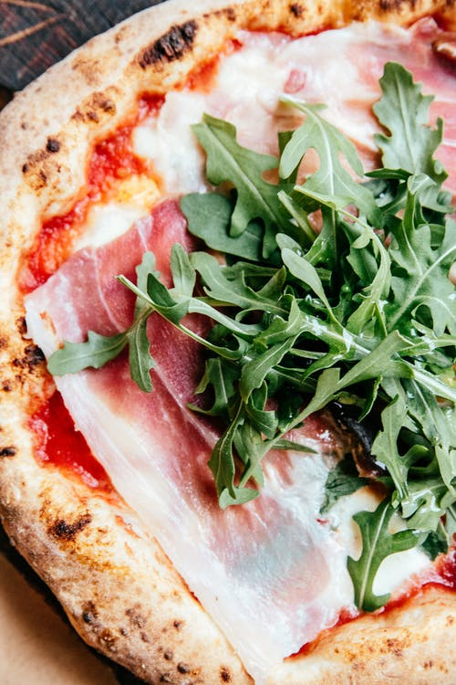

Pepperoni is an American variety of salami, made from cured pork and beef
seasoned with paprika or other chili pepper.
Pepperoni is characteristically soft, slightly smoky, and bright red in color. Thinly
sliced pepperoni is a popular pizza topping in American pizzerias
Pizza Vegetables
description
. It’s fresh and full of flavor, featuring cherry tomatoes, artichoke, bell pepper, olives,
red onion and some hidden (and optional) baby spinach. You’ll find a base of rich tomato sauce
and golden, bubbling mozzarella underneath, of course.
Pizza Spinach
description
This Easy White Spinach Pizza is made with creamy ricotta, spinach, Italian herbs, and a
mixture of mozzarella and Parmesan cheeses! It captures the classic Florentine flavor in pizza
form.
Pizza Onions
description
You'll use the tomatoes reserved from Braised Pork with Slow-Cooked Collards, Grits, and
Tomato Gravy here. Purchase one pound of pizza dough and use most of it here; the rest becomes
grilled flatbreads for Red Lentil Dal with Carrot Salad and Coriander Flatbreads.
Pizza Nepolitan

description
Neapolitan is the original pizza. This delicious pie dates all the way back to 18th century in
Naples, Italy. During this time, the poorer citizens of this seaside city frequently purchased
food that was cheap and could be eaten quickly. Luckily for them, Neapolitan pizza was
affordable and readily available through numerous street vendors.
Pizza Chicago
description
Chicago pizza, also commonly referred to as deep-dish pizza, gets its name from the city it
was invented in. During the early 1900’s, Italian immigrants in the windy city were searching
for something similar to the Neapolitan pizza that they knew and loved. Instead of imitating the
notoriously thin pie, Ike Sewell had something else in mind. He created a pizza with a thick
crust that had raised edges, similar to a pie, and ingredients in reverse, with slices of
mozzarella lining the dough followed by meat, vegetables, and then topped with a can of crushed
tomatoes. This original creation led Sewell to create the now famous chain restaurant, Pizzeria
Uno.